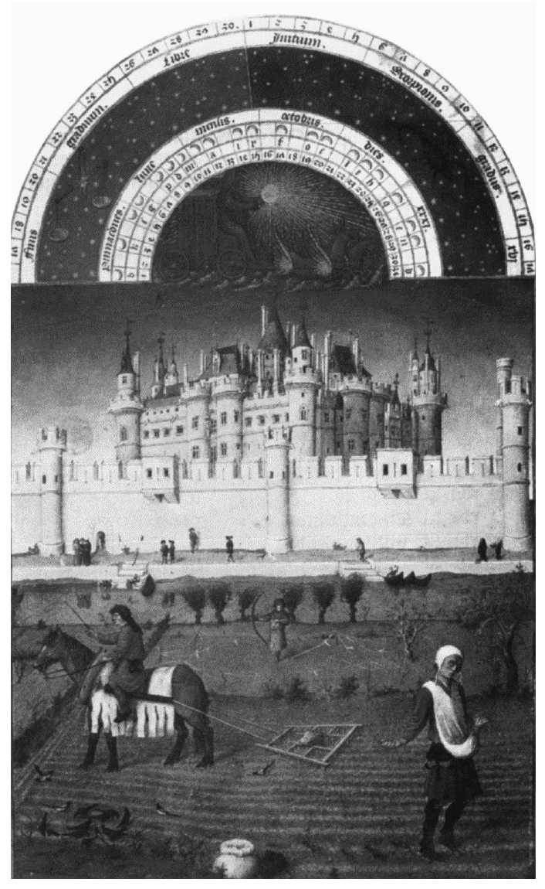

中世纪时期，欧洲经济的发展并不是连续不断的。从900年至1300年，经济稳步增长，但到14世纪时却出现了衰退，这是多种因素结合所致：连年的粮食歉收和饥荒——1315年和1316年时，粮食歉收和饥荒的程度尤为严重；黑死病——它首次发生于1348年至1349年，夺去了三分之一至三分之二城市居民的生命，此后它又周期性地发生，持续了好几个世代；英法两国间的百年战争和德、意等国国内的其他冲突。不过，1400年后不久，经济即又开始复苏，并从那时起，其发展的趋势通常是向上的。
因此，西欧经济除了在14世纪曾衰退过，在中世纪早期几个世纪以后，一直保持相当稳定的增长。其原因之一是，1000年以后，外来入侵随着马扎尔人和维京人终止进攻而告停止。这一点非常重要，因为它使西欧免遭东欧那种因接二连三的外来猛攻所致的破坏；这种外来猛攻在东欧一直持续到17世纪末土耳其人惨遭失败时才告终止。这一点也部分地说明了10世纪至14世纪间中欧和西欧人口显著增长的原因。当时，这些地区的人口约增长了50%；这一增长率在今天看来似乎不足挂齿，但在当时，却是世界上其他任何一个面积大体相当的地区所无法与之相比的。人们努力改进农业技术以支持人口的增长，而粮食的增长转而又使人口的进一步增长成为可能。
欧洲提高农业产量的途径有两条。一是发展细耕农业，即改进耕作方法。这方面最突出的例子是，从8世纪起，逐渐采用三轮制的耕作方法。这种方法使休耕的土地由占耕地总面积的二分之一减至三分之一，从而大大提高了生产率。更有效地使用马力也帮助了农业的发展。在古代，马在农田里派不上什么用场，因为那时所使用的轭在马使劲拉东西时，会将马脖子扼得透不过气来。此外，由于没有钉固蹄铁，马常常折断蹄子，成为废物。不过，到10世纪时，欧洲发明了架在马肩上、不会扼住马脖子的马颈圈。另外，还发明了马蹄铁和串联式马具；后者可用来使一对以上的马共同拉一车货物。最后的结果是，速度较牛快、能力较牛强的马从此以后成为农业经营中必不可少的动力之源。
欧洲提高农业产量的另一条途径是发展大面积耕种；开发以前未耕种过的土地。12世纪时，法、德、英三国得到耕种的土地仅分别占各自全部土地的二分之一、三分之一和五分之一左右；这一事实颇令人吃惊，但却是千真万确的。当时，其余的地方都是森林、沼泽和荒地。在小片已得到耕种的地区的周围是大片尚未开垦、有待拓居的区域。欧洲的农民络绎不绝地进入这些空无人迹的区域，清除森林，烧掉灌丛，排干沼泽，为犁和锄头开路。农民们不仅耕作他们所在地区中的处女地，而且还向东迁移，进入东欧和南欧人口稀少的广大地区。正如美国曾有过西抵太平洋的西进运动那样，欧洲也有过东达俄国边界的东进运动（见地图17）。
人口的增长和农业的发展相应地促进了商业和城市的发展。剩余的粮食由船从新垦农田运回人口更稠密的西部地区，而西部地区则向新开辟地区提供所需的各种工具和制成品作为回报。于是，商业繁荣，城镇兴起，尤其是在波罗的海沿海一带。经济的这种发展极其重要。它表示西北欧开始崛起；这一趋向后来帮助英国人和荷兰人在全世界使西班牙人和葡萄牙人黯然失色。
不仅欧洲内部的贸易在发展，欧洲与外部世界之间的贸易也在发展。这时的国际贸易的发展也是随着维京人终止劫掠活动而开始；维京人多次侵袭欧洲的恐怖气氛曾在9世纪和10世纪笼罩从北极区到西西里岛的欧洲沿海地带。国际贸易发展的另一动力来自从11世纪起的十字军东侵。成千上万的欧洲人参加了这一次次的远征；他们回国后仍垂涎于自己在东方所见到和享受到的种种奇妙的奢侈品。此外，十字军东侵还使欧洲人从穆斯林手中夺得地中海，使地中海如在古代那样成为东、西方贸易的大通道。国际贸易发展的第三个原因是，13世纪时蒙古帝国建立，它把前所未有的统一强加给辽阔的欧亚大陆的大部分地区。欧洲的商人，尤其是意大利人，利用当时的和平、安全和妥善护养的线路，几乎直接与东方进行贸易。

图139 农夫耕作图。自8世纪以来，三轮制的耕作方法提高了生产率，增加了产量。
贸易关系的扩大和加强产生了重大影响。欧洲经济适应国际贸易的程度开始远远超过东方诸较为自给自足的帝国的经济。欧洲的消费者和生产者变得习惯并依赖于外国的商品和市场。随着人口的增长，交易的规模也开始逐渐增大。人口压力加之诸国家和城邦之间的竞争的促进力，驱动商人们去寻找新的产地、新的路线和新的市场。他们的竞争态度与同时代的中国人截然不同；中国人虽曾航海数千英里，但完全是出于非经济方面的原因（见本章第五节）。他们对贸易毫无兴趣，只是将诸如长颈鹿之类的奇珍异兽带回自给自足的祖国，以取悦他们的皇上。出于明显的地理方面的原因，欧洲完全做不到自给自足，它迫切需要香料和其他外国产品。这一需要与迅速发展的经济活动及蓬勃的经济活力一起，最终使欧洲人航行于各大洋，使欧洲商人遍布每一个港口。